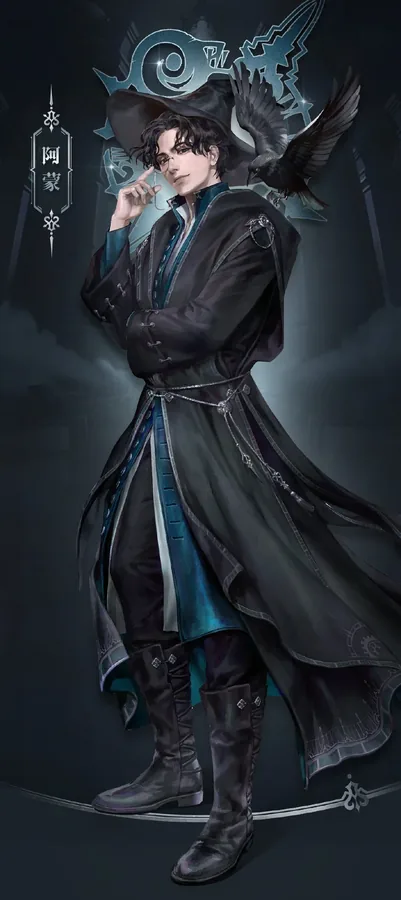

Overview
Amon, also known as the Angel of Time, was one of the Kings of Angels from the Third Epoch and a child of the Ancient Sun God. He was born as a Sequence 1 Worm of Time with the Uniqueness of Error.1
According to the doctrines from the Third Epoch, the Ancient Sun God once referred to Amon as the God of Trickery, the God of Mischief, and the light at the dawn of the apocalypse.2
In fall of 1352, he advanced to a Sequence 0 Error by replacing Mr. Door in his Apotheosis Ritual.3 Shortly after, he accommodated the Uniqueness of Door as well as a Key of Stars Beyonder characteristic and ascended to become a Dual-Pathway True God.
After he was defeated by Klein, he revived in his avatar, which was guarded by Adam. He then left for the Cosmos, seeking the meaning of humanity.4
In Circle of Inevitability, he secretly followed Termiboros from the Cosmos back into this world, then replaced Termiboros in 1358 and switched to Sequence 1 Angel of Redemption of the Eternal Aeon Pathway by the time of the 1359 Project Vortex.5 By rank suppression and a surprise ambush during the 1360 Death of Primordial Demoness, he successfully parasitised Zaratul, who had converted to the Great Mother, through his Historical Projection. He then assisted Lumian Lee in the fight against the Primordial Demoness.
Don't ask us why we're taking such risks. Life often requires some excitement, joy, and anticipation.
Amon's Letter, Book 1, chapter 1006.
Honorific Name
Current
The Shadow Wandering through Fate, The Past God of Deceit, The Destined Messiah. This is his honorific name as an Angel of Redemption.6
As a King of Angels
The Clock-Hand that Tampers with Time, The Shadow that Roams across Fate, The Embodiment of Deceit and Trickery. This is his honorific name as an Error Pathway King of Angels.7
Appearance
He is described as looking like a young man with black eyes and curly black hair. He has a broad forehead and a thin face. Usually, he wears a crystal monocle, which hangs over his right eye, and a black pointed hat.
Personality
You truly are powerful, cunning, and terrifying, truly worthy of the title of 'God of Deceit.'
The Fool Klein, Book 1, chapter 1386.
As a pleasure seeker, he had no common ethics and just pursued stimulation and cheerfulness. He saw anything as his toys or playmates. He teased others just for fun. After all, in the eyes of a natural Mythical Creature like him, human beings weren't different from ants. They were all just toys.
He is good at deceit and prefers using fraud rather than straight-up violence to achieve his goal. His words can be very persuasive, and he often misleads others with rhetoric.
To him, there's something more important than life. To you, apart from yourself, there's nothing worth caring about. When the matter develops to a point where one's life is put on the line, it would imply your loss. Born as a Mythical Creature, your lack of normal anchors is also a problem. This makes you know what courage and sacrifice are, but it's hard for you to understand.
Adam to Amon, Book 1, chapter 1387.
However, Amon first and foremost values his own life. His deceitful, fraudulent, and somewhat reckless attitude is simply a cover. This was exploited by Klein, leading to Amon's defeat.
Circle of Inevitability
As a born Mythical Creature, Amon is highly influenced by Beyonder characteristics, so as he became an Angel of Redemption, he has a redemptive nature.8
Trivia
- Amon called Adam "my zealous brother".9
- Amon was categorized by the author as a "Uniqueness who became sentient", which is similar to the Hidden Sage.10
- Amon couldn't decrypt the fourth line of Klein's honorific name, "Protector of Backlund magic and drama performers." He was amused when he got the answer from Klein's mind. He said that it was very interesting, then asked Klein if he wanted to become his Blessed. In response, however, Klein simply asked Amon to kill him.11
- He can use some of the Abyss' characteristics to go anywhere.12
- Under his auspices, "the Amons" would adopt internal decisions by democratic voting.13 Each avatar of Amon has its own consciousness, each thinking they are Amon. In this situation, even though the main body has been snatched away, the remaining Amons will still choose a "big brother", or not choose at all.14
- When Amon learned that Klein had put on a monocle on the left eye and pretended to be him to frighten Medici, he thought it was very interesting, and said that he would pretend to be Klein the next time he met Medici and do the same in front of him.15
- Every avatar of Amon is obsessed with monocles. When he was a seagull, his right eye had a black circle of feathers.16 When he was an ant, he could only wiggle his right antenna.
- Medici was responsible for holding him when he was an infant and burned his hair for some reason.17
- According to the author's interview, the first half of the Ancient Sun God's prophecy, "The Angel of Time is the light at the dawn of the apocalypse", refers to when Amon stopped an Outer Deity descending through Mr. Door, and the other half may appear in the second book.18
- According to the author's interview, Amon finds out his brother is his father approximately at the start of Volume 7.19
- According to the author's reply to some WeChat questions, a raven is one of the forms that Amon likes to appear as, which is also one of his symbols in mysticism.20 Amon once explained that he doesn't need to build an idol since all of his believers are himself; however, back in the Ancient Sun God's reign, he had other believers aside from his avatars, who used either a clock with the title "Angel of Time" or a crow covered in mysterious patterns with the title "God of Mischief", or both, to refer to Amon.21
- In Book 2, Amon changed his symbolic form to an owl, mocking Pallez, who couldn't even decipher this as a Cryptologist.22
- In the side story In Modern Day, he is a monocle-wearing driver Zhou Mingrui called from a ride-sharing app.23
- According to the author, the Amon in this side story is the real Amon, because Klein is accommodating Amon's Uniqueness to become a Half-Lord of Mysteries.24
References
- Book 1, chapter 1006.
- Book 1, chapter 1063.
- Book 1, chapter 1352.
- Book 1, chapter 1387.
- Book 2, chapter 877.
- Book 2, chapter 1120.
- Book 1, chapter 1242.
- Author's WeChat post red_priest, part 53.
- Book 1, chapter 1154.
- Author's WeChat post beauty_goddess, part 10.
- Book 1, chapter 1151.
- Book 1, chapter 1152.
- Book 1, chapter 1123.
- Interview with Cuttlefish, 2022-10-29 (Reddit, translated).
- Book 1, chapters 1153 and 1275.
- Book 1, chapter 1090.
- Book 1, chapter 1276.
- Book 1, chapter 1063; We Interviewed the OG Lord of Mysteries Himself, question 10.
- Live interview at Shanghai CP26, question 9.
- Author's WeChat comments and answers, question 15.
- Book 1, chapter 1161.
- Book 2, chapter 876.
- Side story In Modern Day, chapter 14.
- Andis and The One And Only Cuttlefish's first offline meet up, question 2.
Source
Article adapted from Amon on the Lord of the Mysteries Fandom wiki (CC BY-SA). Chapter numbers follow that article's citation format.
Image gallery
